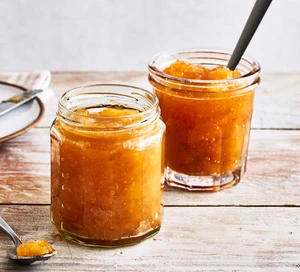

Apple Jam Recipe

Description:
Apple Jam made with apples all jammy like mmm
1kg Bramley apples - peeled, cored and chopped
250g caster sugar
1/2 lemon - juiced
1 cinnamon stick
Steps:
Put a small plate in the freezer. Tip the chopped apple and caster sugar into a large saucepan along with 350ml of water and bring to a simmer, stirring to dissolve the sugar.
Cook gently, stirring regularly, for 30 mins until the apples have collapsed.
Stir in the lemon juice, add the cinnamon stick and simmer gently for another 2-3 mins until the mixture is thick and glossy.
Remove the small plate from the freezer and drop a little of the mix onto it. Leave for a few seconds – it should be fairly firm. If it’s still a little runny, put the pan back of the heat and simmer for another 10-15 mins. Put the plate back in the freezer and test again, it should now be ready.
Divide between clean, sterilised jars and seal. Will keep for three months in a cool, dry place. Once opened, chill and use within one month